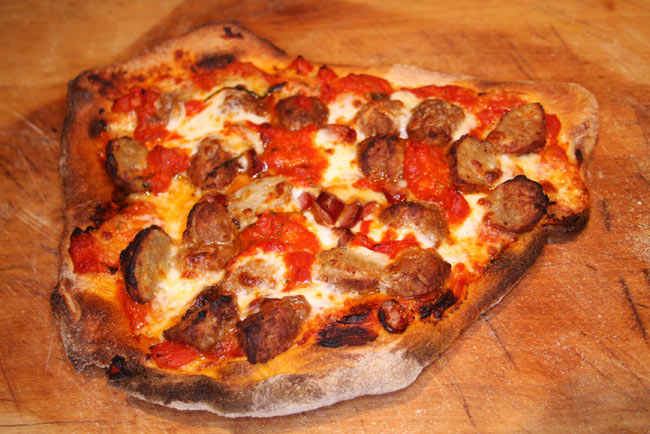

Pizza Recipe
Home
threebigbites.com

“
New York-style stone baked pizza”
by Jerry Pank Cookipedia.co.uk,
CC-BY 4.0
Description
An Italian dish typically consisting of a flat base
of leavened wheat-based dough topped with
tomato, cheese, and other ingredients,
baked at a high temperature, traditionally in a
wood-fired oven.
Ingredients
Make your own choice of sauce, cheese, and
toppings according to your desire.
- Dough
- Flour
- Water
- Yeast
- Salt
- Olive oil
- Sauce
- Tomato Sauce
- Vodka Sauce
- Cream-based Sauce
- Cheese
- Mozzarella
- Ricotta
- Parmesan & Romano
- Cheese Blends
- Toppings
- Pepperoni
- Sausage
- Chicken
- Prosciutto
- Mushrooms
- Spinach
- Onions
- Peppers
- Roasted Vegetables
- Seasonings
- Basil
- Garlic
- Oregano
- Olive oil
Steps
Dough
- In a small bowl, combine the water, yeast,
and 1/2 teaspoon sugar. Whisk, then set
aside for 10 minutes.
- Meanwhile, combine 2 cups flour, the salt,
and the remaining sugar in the bowl of a
stand mixer. Stir briefly to combine, then
add the olive oil.
- When the yeast water is ready, add it to the
bowl. Mix, using the dough hook, for about 5
minutes on your mixer’s lowest setting. Every
minute or so, pause the mixer to stir in the
dry ingredients around the edges.
- Once all of the dry ingredients are incorporated
into the dough, add the remaining 1/2 cup flour.
Mix for another 30 minutes on the lowest speed.
Ideally, pause the mixer every 5 minutes or so
to scrape the dough ball off the hook.
- The dough should be slightly sticky to the touch,
but dry enough that it’s not sticking to the
mixer bowl. If the dough feels too tacky or too
dry after 30 minutes of mixing, add flour or water
just 1 teaspoon at a time. Allow the mixer to
incorporate the addition for 5 minutes before
adding more.
- Transfer the dough to a clean bowl, cover, and
place somewhere warm for an hour to rise.
- After an hour, remove the risen dough from the
bowl and place it onto a clean, flat surface
such as a cutting board or marble slab. Knead
for about a minute to remove any large air
bubbles.
- Divide the dough into 4 equal parts, optionally
using a kitchen scale. Roll each part into a tight
ball, ideally keeping an unbroken skin on the
outside of the ball (pinch the bottom of the ball
together to hold the skin shut).
- Lightly coat a flat surface that you can put into
your refrigerator with olive oil. (Until I got my
dough trays, I used a cutting board.) Coat each
ball with olive oil, then set onto the oiled
surface, pinched-skin-side down. Make sure the
dough balls are several inches apart, as they’ll
grow again.
- Refrigerate the dough for at least 4-6 hours, or
up to 3-4 days.
- An hour before you’re ready to use it, take the
dough out of the refrigerator and place it
somewhere warm.
Preheat Oven
Do at least an hour before baking. Turn your oven up
as high as it will go.
Prepare Toppings
Stretch Your Dough
Form your dough into a nice flat circle.
Top Your Pizza
Add your sauce, cheese, and chosen toppings.
Bake!!
Slide the pizza into your oven. Use one smooth motion.
Wait about 7-10 minutes and then take the pizza out
of the oven.
Finish
Add your final seasoning.